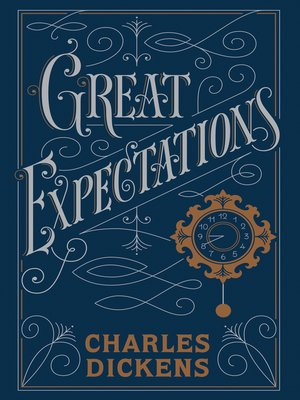

Breat Expectations is the thirteenth novel by Charles Dickens and his penultimate completed novel, which depicts the education of an orphan nicknamed Pip (the book is a bildungsroman, a coming-of-age story). It is Dickens's second novel, after David Copperfield, to be fully narrated in the first person. The novel was first published as a serial in Dickens's weekly periodical All the Year Round, from 1 December 1860 to August 1861. In October 1861, Chapman and Hall published the novel in three volumes. The novel is set in Kent and London in the early to mid-19th century[and contains some of Dickens's most celebrated scenes, starting in a graveyard, where the young Pip is accosted by the escaped convict Abel Magwitch.Great Expectations is full of extreme imagery – poverty, prison ships and chains, and fights to the death – and has a colourful cast of characters who have entered popular culture. These include the eccentric Miss Havisham, the beautiful but cold Estella, and Joe, the unsophisticated and kind blacksmith. Dickens's themes include wealth and poverty, love and rejection, and the eventual triumph of good over evil. Great Expectations, which is popular both with readers and literary critics, has been translated into many languages and adapted numerous times into various media. Upon its release, the novel received near universal acclaim.Although Dickens's contemporary Thomas Carlyle referred to it disparagingly as that "Pip nonsense," he nevertheless reacted to each fresh installment with "roars of laughter".Later, George Bernard Shaw praised the novel, as "All of one piece and consistently truthful." During the serial publication, Dickens was pleased with public response to Great Expectations and its sales; when the plot first formed in his mind, he called it "a very fine, new and grotesque idea." In the 21st century, the novel retains good ratings among literary critics and in 2003 it was ranked 17th on the BBC's The Big Read poll.
